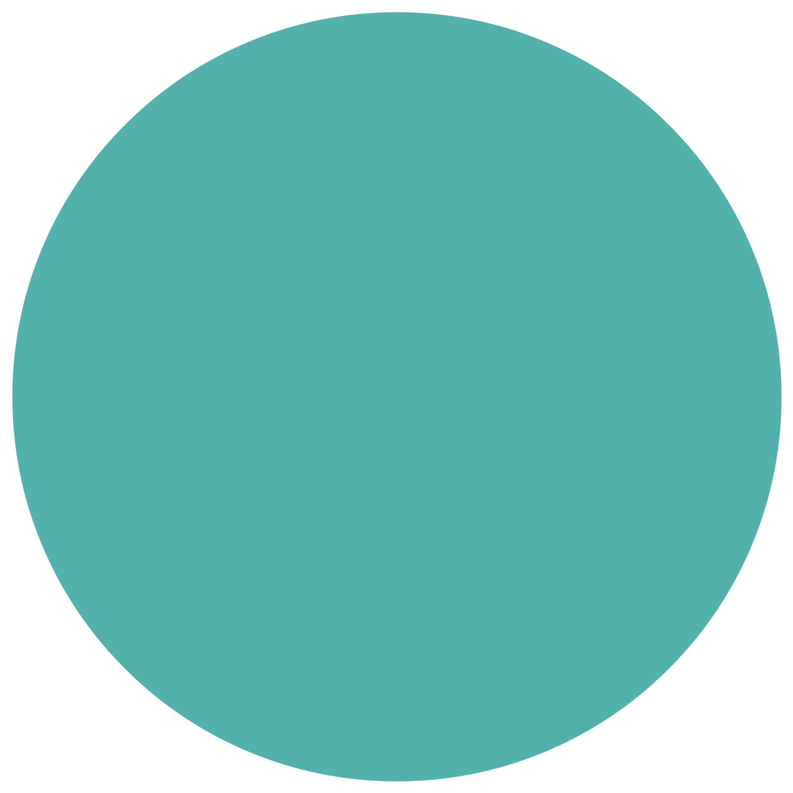
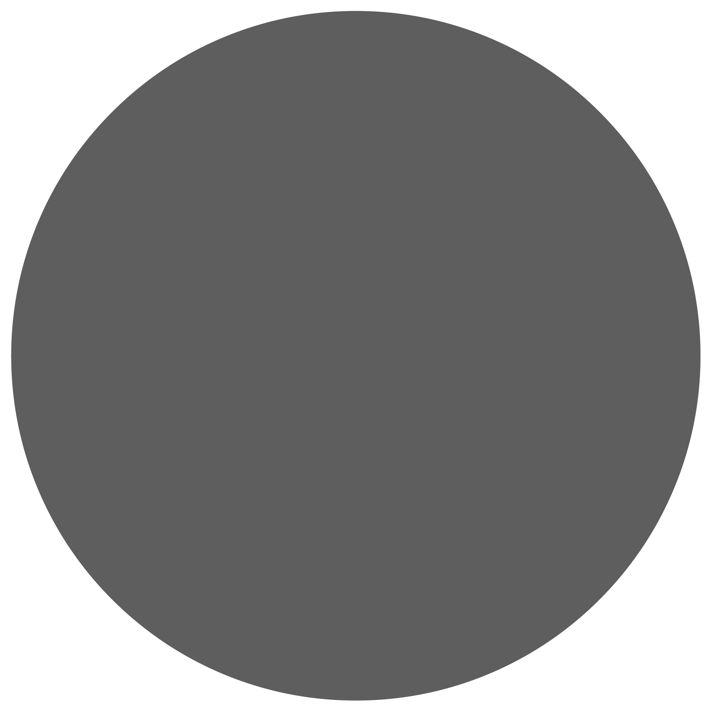
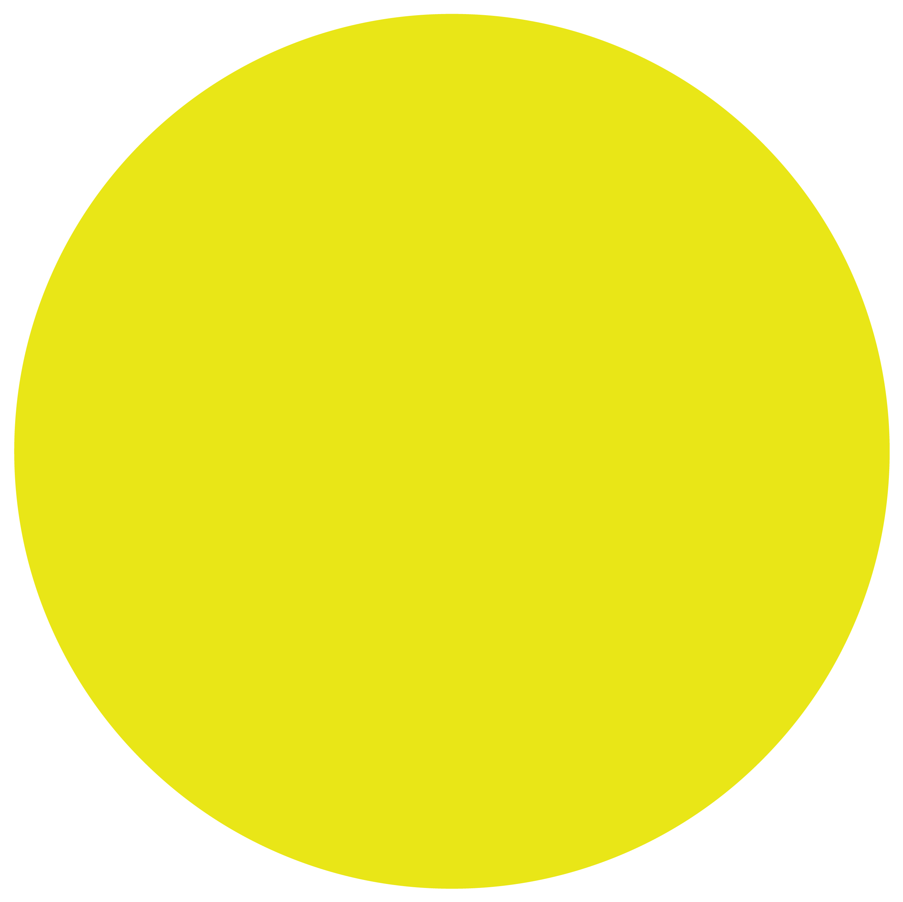
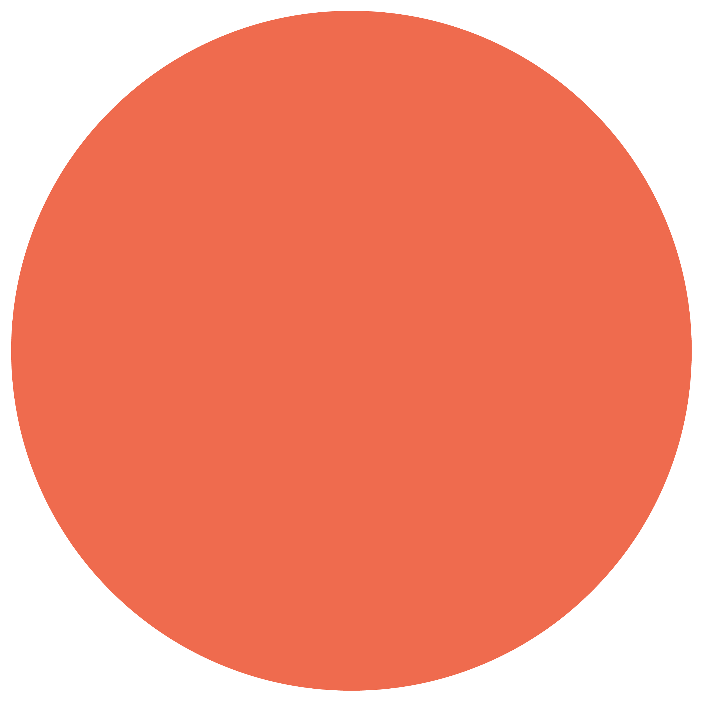
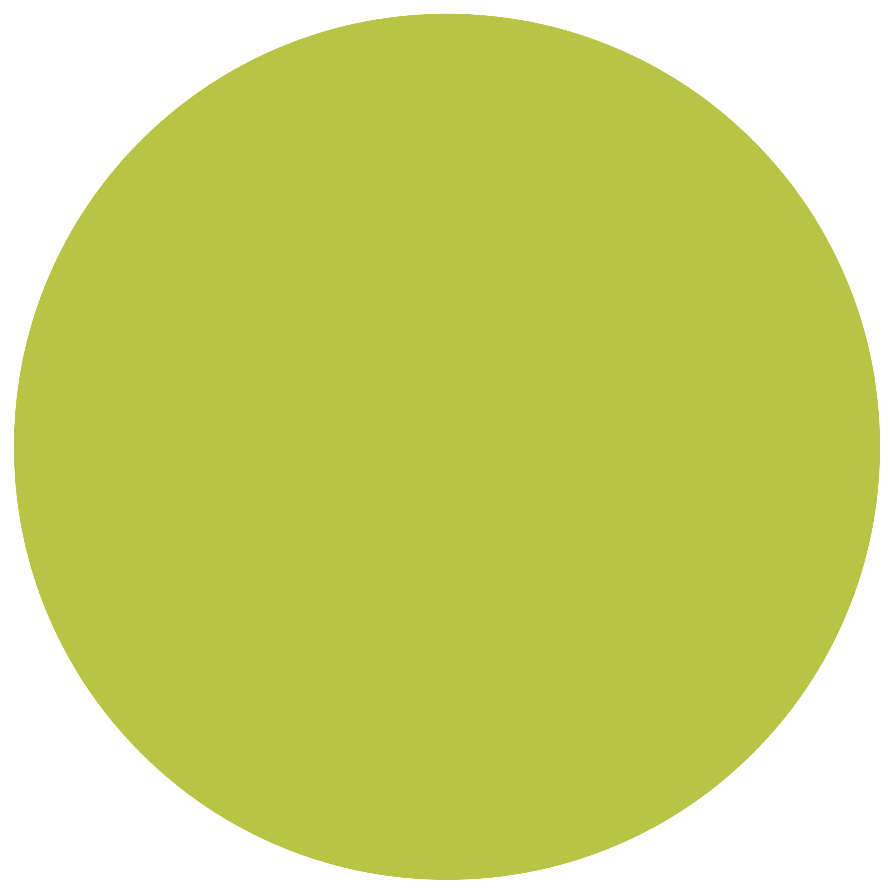

Explore our new brand colors below and the emotions with which they’re associated:





According to studies, blue is the most popular favorite color; it’s a color that is seen as calm, reliable, and trustworthy. Many companies default to using medium-to-dark blues in their branding because of the feelings of stability and loyalty that these kinds of blues promote. Lighter blues feel calming, since they remind us of a perfect blue sky or sea; they’re often used in health services or consumer goods like water purification products. People tend to be more productive in rooms with blue walls. For all of these reasons, we wanted to include blue, but since we wanted it to feel modern and creative, we opted for a blue-green in our primary palette
to inspire a sense of freshness and energy.
Leff blue
Primary colors
Secondary colors
Ash gray
Gray colors are thought of as balancing. They evoke wisdom, sophistication, and professionalism. Grays are also compromising, since they are combinations of the extremes: white and black. They’re versatile, too: a little yellow or red can make a gray feel warmer, while blues can make a gray feel cooler. Leff's darker gray has a slight warmth to it that helps the brighter colors in the palette shine.
Pewter gray
The human eye can actually distinguish between 500+ shades of gray. Gray colors are often seen as forward-thinking and modern, and they pair well with brighter colors for balance. Our new lighter gray is more neutal, neither warm nor cool, and we can use it for backgrounds without taking any focus away from the other palette colors.
White
There are more commercially available shades of white than any other color. White evokes a sense of goodness and is thought of as the color of perfection. White colors also lend simplicity, cleanliness, and a sense of fresh beginnings, which we wanted to include in our new brand. Many health care and tech companies use a lot of white in their advertisements to underscore purity and simplicity in their products. We use white in our primary palette liberally.
Dandelion yellow
Yellow is the happiest of all colors. It inspires positivity, clarity, warmth,
and enlightenment. It can stimulate memory and communication,
and spark creative thoughts. However, since yellow can also be seen as spontaneous and strong, we chose it for our highlight color.
Sunset red
Red is one of the most emotional colors and can awaken strong feelings, including love and passion, danger, and rage. Many cultures hold
red as the color of beauty. However, in business, red is a leadership color.
It evokes strength, courage, and determination. Leff’s red is muted for
a softer feeling, because a strong red color can draw too much attention. Additionally, we chose to limit it to our secondary color palette and use
it sparingly.
Spring green
Green evokes life, growth, harmony, and endurance. It also symbolizes prosperity and progress. It is second to blue in popularity, though it may have been George Washington’s favorite. However, certain greens, such as Kelly green or dark green, are often associated with greed and money. We settled on a yellowish-green in our secondary palette; this spring-like green can inspire feelings of renewal, youth, and hopefulness.
Leff blue
Ash gray
Pewter gray
White
Dandelion
yellow
Spring green
Sunset red
Leff blue
According to studies, blue is the most popular favorite color; it’s a color that is seen as calm, reliable, and trustworthy. Many companies default to using medium-to-dark blues in their branding because of the feelings of stability and loyalty that these kinds of blues promote. Lighter blues feel calming, since they remind us of a perfect blue sky or sea; they’re often used in health services or consumer goods like water purification products. People tend to be more productive in rooms with blue walls. For all of these reasons, we wanted to include blue, but since we wanted it to feel modern and creative, we opted for a blue-green in our primary palette
to inspire a sense of freshness and energy.
Select colored circles to learn more